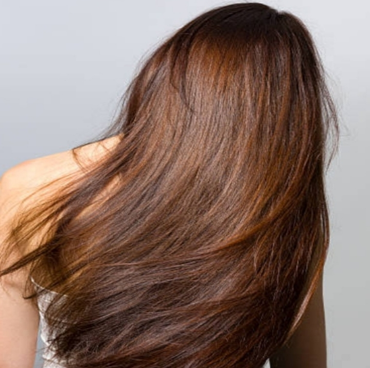
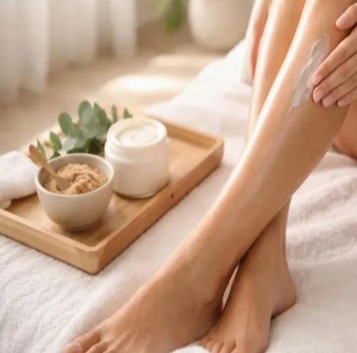
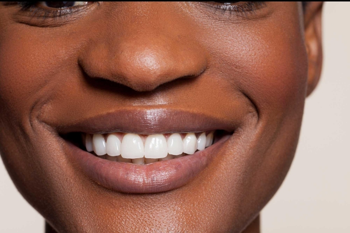
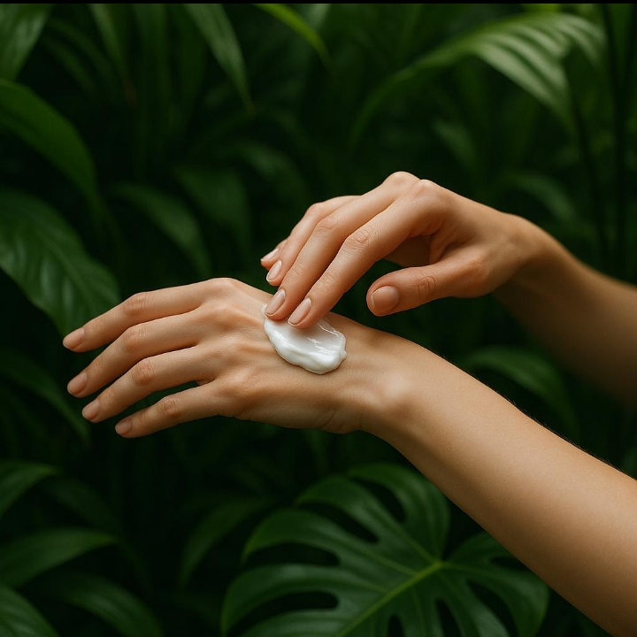
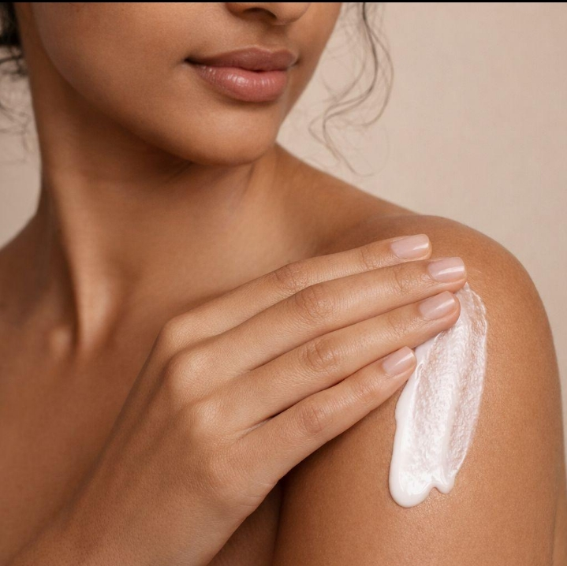

FACE CARE

HAIR GROWTH

LEG CARE

TEETH WHITENING

HAND CARE

| The Ingredients Mixture And Name | The Use | In Which Skincare The Ingredients Are Used |
|---|---|---|
| Aloevera | Aloe vera is used to kepp the skin soft and supple.it helps trat acne and pimples while reducing the apperance of the fine lines and facial wrinkles. |
|
| Aloe honey glow mask | This mixture combine the antibacterial power of honey with the brightening vitamin c of lemon and the soothing properties of aloe to clear the skin and give it a healthy glow. | |
| Cooling Mint Brightener | Mint helps in reducing spots and brightening the skin tone.it contains menthol which cools the skin,while yogurt acts as nourishing base. | |
| Antioxidant Detox Scrub | Green tea helps rid the skin of toxins with antioxidants, honey protects from bacteria and retains moisture,and rice flour acts as a natural exfoliant | |
| Anti-aging Tomato Mask | Tomatoes contain lycopene,an antioxidant that protects the skin from harmful sun rays and is highly effective in fighting signs of aging | |
| Milk And Orange Peel Brightener | Lactic aicd in milk exfoliates dull cells while orange juice provides a powerful bleaching effect | |
| Egg White And Almond Mask | This mixture uses egg white to tighten pores and almond oil to provide essential fatty acids for skin health | |
| Coffee And Coconut Antioxigant Scrub | Coffee provides caffeeine to stimulate skin renewal And reduce puffiness,while oil offers deep hydration | |
| Potato Juice Skin Brightener | Potatoes contain a natural enzyme the lightens skin tone and fades dark spots effectively | |
| Rosemary Scalp Stimulant | Rosemary improves blood circulatin to the scalp and stimulates hair follicles for faster growth |

|
| Fenugreek Strength paste | High in nicotinic acid and proteins to combat hair fall | |
| Baking Soda Exfoilating Scrub | Acts as a mild exfoliant to remove dead skin cells and excess oil from the scalp | |
| Egg And Yogurt Strengthening | Yogurt cleanses while egg provide the structural protein neede to fix splits | |
| Honey And Milk Softner | Honey draws moisture into the hair ,while milk proteins Strengthen it. | |
| Tomato Mask | The acidity of tomatoes helps balance pH of the scalp and control oil | |
| Avocado-mayo Smoothness | Combines lilid and protein for the ultimate smoothing mask | |
| Black Sesame Mask | Black sesame oil is known to promote good hair growth | |
| Cooling Peppermint Mist | It provides immediate cooling from irritation | |
| Castor And Coconunt Density Mask | Castor oil is good for thickening hair,while cocnut oil repairs damage | |
| Banana And Cocount Softening Balm | Banana helps to remove dead skin,while Cocount deeply hydrates the dry skin |

|
| Rice Flour Heel Scrub | Matural exfoilating properties that remove dead skin layers and prevent dryness | |
| Acidic Vaseline Softner | Lamon acid exfoliates while vasline provides a deep moisture barrier | |
| Honey Foot Bath | Honey acts as a natural antibacterial agent to heal crack | |
| Coconunt Overnight Shield | Provides deep moisture that speeds up the healing of dry heels | |
| Shea-lemon Healing Balm | Shea butter repairs the skin barrier while lemon refreshes and lightens | |
| Mouthwash Skin Softener | Soften hardened skin | |
| Baking Soda Foot Exfoliant | Exfoliates dead cells and soothe feet | |
| Aloe Collagen Repair | Activates collagen and uses amino acids to soften and heal cracked skin | |
| Paraffin Smoothing Shield | It is treatment to seal moisture into deep cracks | |
| Salt And Charcoal Mineral Restorer | It is used to restore minerals and white color to the teeth |

|
| Sea Salt And Lemon Natural Bleach | A quick and cost-effective mix where lemon acts as a natural bleach and salt exfoliates surface stains | |
| Salt And Baking Soda Power Whitener | A powerful combination to boost Whitening speed and effectively clean the teeth | |
| Bay Leaf And Dried Orange Scrub | Targets stains using essentilal oils found in the peels | |
| Olive Oil Gum Cleanser | Olive oil acts as a natural antiseptic that strenghtns gums and prevents bleeding while Whitening | |
| Mint And Parsley Rinse | These herbs fight inflammation and neutralize persistent odors | |
| Banana Mineral Whitener | Minerals in potassium and manganese aid in whitening tooth enamel | |
| Strawberry And Baking Soda Whitener | It is used to remove surface discoloration | |
| Cinnamon And Honey Pain Relief Paste | It contains a natural paste that combines anti inflammatory properties of cinnamon with the antibacterial power of honey | |
| Coconunt Oil Pulling | An ancient method to puul toxins and bacteria out of the mouth for whiter teeth | |
| honey and sugar hand scrub | This scrub exfoliates dry skin and locks in moisture |

|
| Olive-salt Smoothing Scrub | A powerful exfoliant that removes dead skin cells while olive oil deeply hydrates | |
| Honey-lemon Softner | Honey provides essential vitamins to purify the skin | |
| Avocado-banana Hand Mask | A nutrient-dense paste that heals cracks and nourishes thin hand skin | |
| Overnight Vasline Therapy | Vasline contains concentrated facts that hydrate deep pores and protect from dryness | |
| Yogurt Mask | Yogurt contains moisturizing and exfoilating properties for rough skin | |
| Banana-honey Mask | Seals in moisture using a blend of healthy fats and humectants | |
| Wheat-yogurt Skin Smoother | A thickening mask used to soften very dry and rough hands | |
| Soda Hand Polish | Softens skin,lightens spots,andimproves overall hand skin tone | |
| Glycerin-rose Hydrator | A light but effective daily mixture to keep hands soft and fragrant | |
| Natural Alum And Musk Deodorizer | A traditional chemical-free way to eliminate ododrs and gently lighten the underarm area |

|
| Warm Cinnamon Spice Oil | A warm,spicy fragrance oil that stimulates the sense and masks odor | |
| Aromatic Lemon Ointment | A warm homemade balm that provides a fresh citrus scent and softens the skin | |
| Sugar And Yeast 7-day Whitening | A rapid exfoliant and brightening scrub that shows results within a week | |
| Ginger And Honey Thermal Mask | Ginger stimulates blood flow while honey and yogurt nourish the skin. Note:may cause brief tingling sensation | |
| Oatmeal And Honey Soothing Exfoliant | A gentle mixture that exfoliates while preventing irritation, perfect for delicate areas | |
| Coffee And Antioxidant Scrub | Coffee tightens skin and reduces fine lines while removing dead cells | |
| Cucumber And Turmeric Brightening Paste | Combines the cooling,whitening properties of cucumber with the skin-toning benefits of turmeric | |
| Milk And Honey Softening | Vitamins and fatty acids in milk softens the skin while helping to fade dark pigments | |
| Brown Sugar And Coconunt Body Glow | A moisture-rich scrub that uses brown sugar grains to Polish akin while coconut oil hydrates deeply |